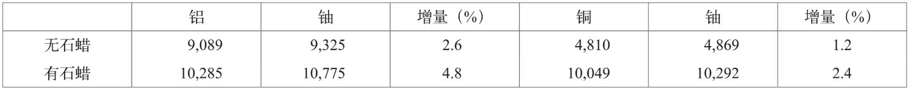

英文
英文罗特布拉特
编者按
波兰物理学家约瑟夫·罗特布拉特在本文中提供了关于铀核裂变过程中中子释放的进一步证据，此前已经报道过相关的间接证据。他使用了一项新技术，并提出一个裂变事件中产生的次级中子数目可能高达6个。罗特布拉特持续从事研制原子弹的曼哈顿项目工作，但是战后他成了核武器的强烈批评者，并且坚持不懈地致力于国际核武器控制。1957年，罗特布拉特和哲学家伯特兰·罗素一起发起了具有极大影响力的帕格沃什会议，这次会议上科学家和社会名人一起努力以实现减少核武器的扩散。 英文
哈尔班、约里奥和科瓦尔斯基在《自然》中所描述的实验[1]为在中子俘获之后伴随着铀核裂变的中子倍增提供了间接证据。从这些实验可以推知，一般来说，这些新产生的中子比来自作为放射性初级辐射的镭C–铍源的光中子更快。这一结论在这几位作者随后的一篇文章[2]中得到证实，他们发现由铀贡献的中子能够产生吸能反应S(n, p)P。 英文
我对同样的问题用不同方法做了一些实验。在令中子通过一种给定介质的实验中，所观察到的中子效应的任何增长都可能是由于以下原因造成的：（a）中子的非弹性散射；（b）（n,2n）反应，个别时候是（n,3n）反应；（c）未知原因，就像在铀核裂变的情况中那样。在哈尔班、约里奥和科瓦尔斯基的实验中，由于集成方法的采用和初级中子的能量较低，故可以排除效应（a）和（b）。但是如果这些效应存在的话，就有可能通过将铀与只可能有（a）效应或只有（a）和（b）效应的物质进行比较，进而估计出它们相对于效应（c）的重要性。我曾经使用铝和铜分别作为第一类和第二类对比物质。 英文
把氡–铍放射源置于一个铝质圆柱体（直径为2.2厘米，高为5.0厘米）轴向的孔中，或者，也可以采用同样尺寸的装填有氧化铀（U3O8）或氧化铜的圆柱形双层壁容器。铝的质量为40克，氧化铀质量为49克，氧化铜质量为42克，器壁厚度是可忽略的。结果吸收或散射的铀核数目是相应的铝核数目的1/9.2，是铜核数目的1/3.3。由此我们预期，铝产生的效应（a）与铜产生的效应（a）和（b）至少是同样重要的，甚至可能比铀产生的同种效应更大。我们将这些物质所发出的中子的数目和性质进行比较，比较的方法是分别在下述两种情况下测量包裹在圆柱体周围的银箔的放射性：第一种情况是在圆柱体外部没有发生明显的中子散射时，第二种情况是中子经6毫米厚的圆柱形石蜡层散射而返回时。下面数据列出了该实验的结果，数字表示用盖革–米勒计数器在相应的序列中得到的总计数。 英文

根据这些数据可以推测，事实上铀比铝或者铜发射出更多的中子。相对于铝的增量比相对于铜的增量要大，这必定是因为后一种元素中发生了（n,2n）反应。在铝和铜两种情况中，当中子被少量石蜡慢化时这种增量是比较大的，这表明从铀所产生的新的中子平均来说比放射源发射出的大量初级中子慢。由于在其他的证据中，它们似乎比镭C–铍中子快，因此我们可以估算出它们的平均能量必定具有1兆电子伏的数量级。 英文
由于作为吸收体或散射体的铀核数目较小，所以由这些核发射出的中子的明显过剩似乎不可能归结为某些细微的原因，比如非弹性散射或（n,2n）反应。它可能代表了伴随着一个放射性铀核的裂变而产生的中子簇射。假定由氡–铍源的中子产生这个过程的截面等于5×10－25平方厘米，我计算出单独一次裂变发射出的中子数等于6。 英文
（王耀杨 翻译；张焕乔 审稿）